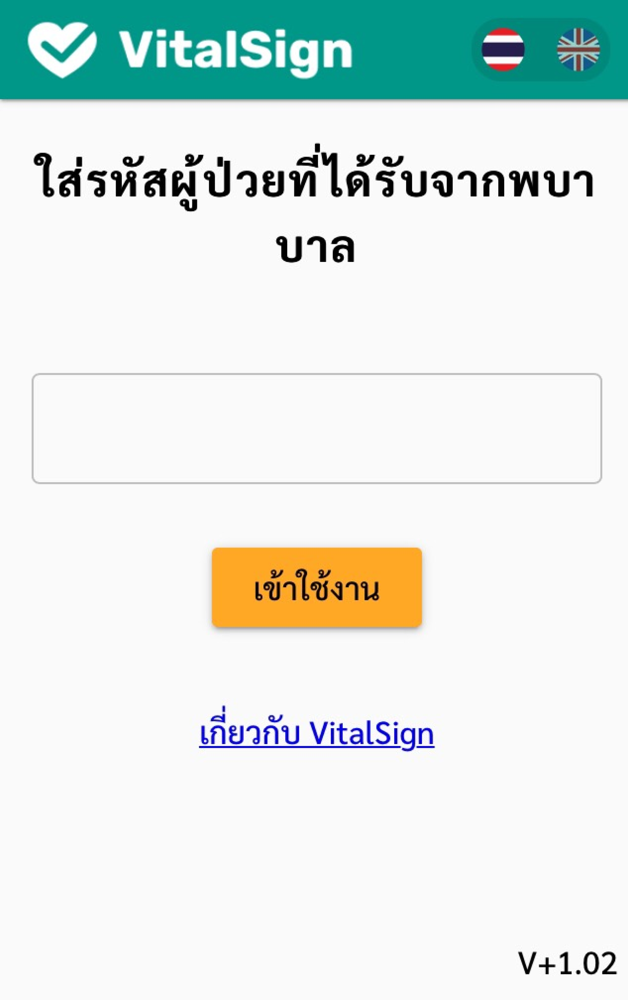
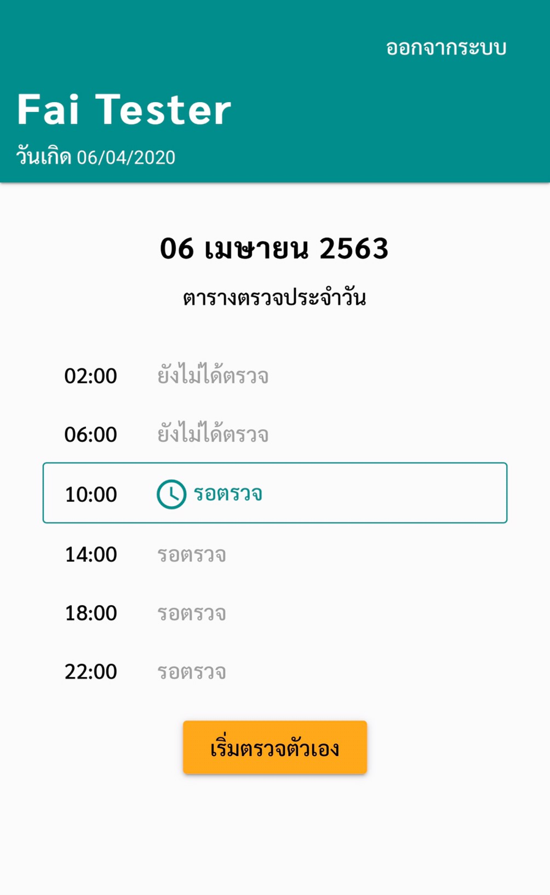
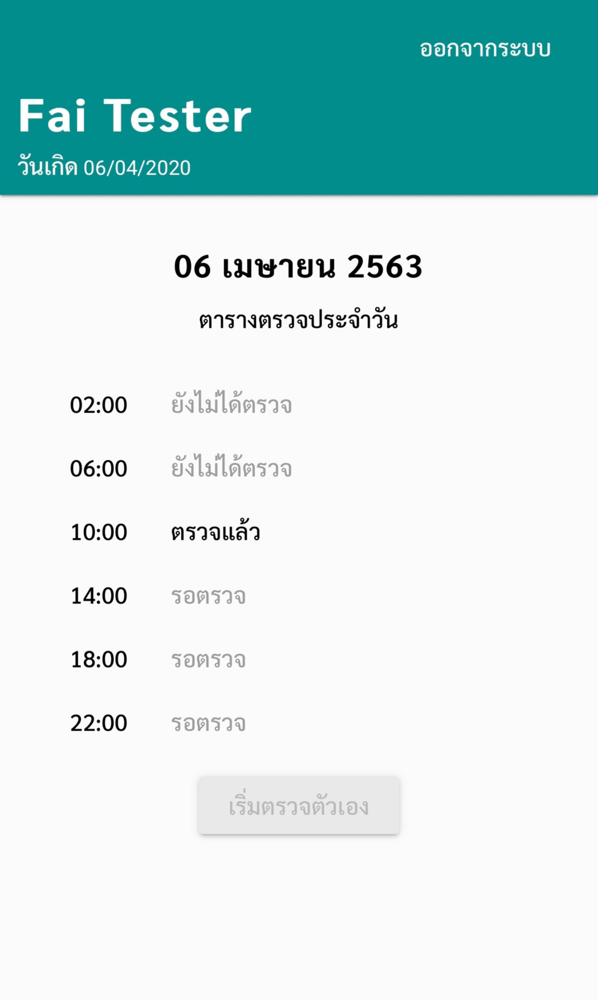
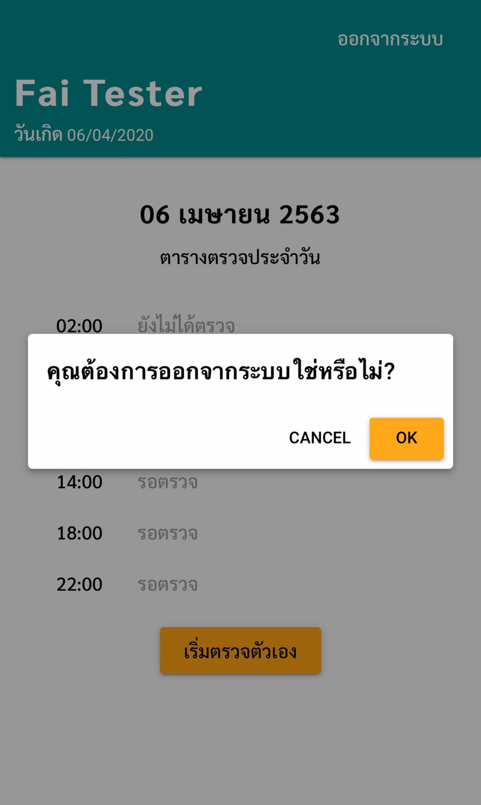
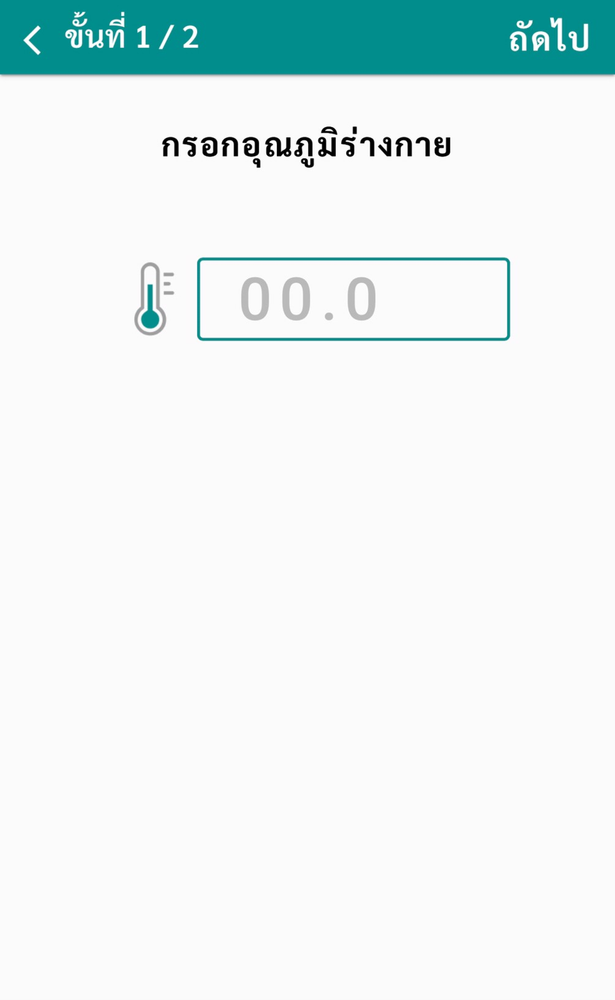
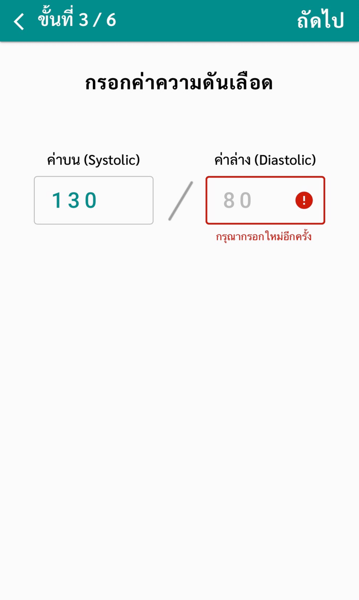
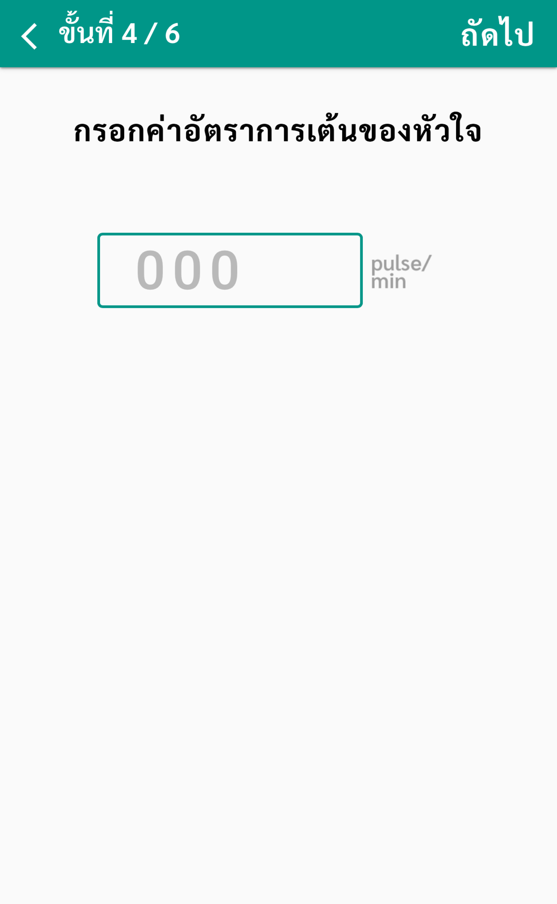
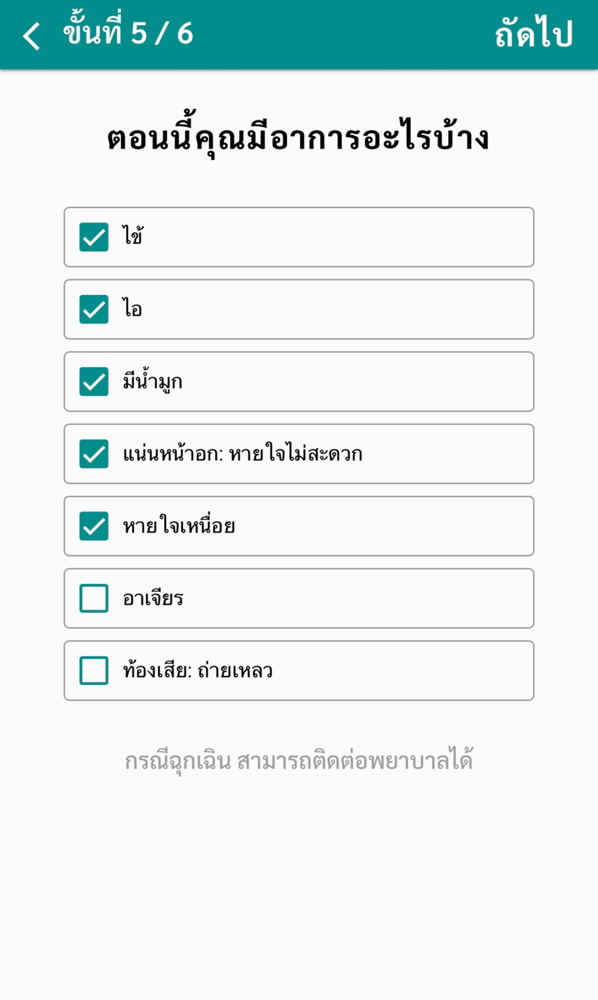
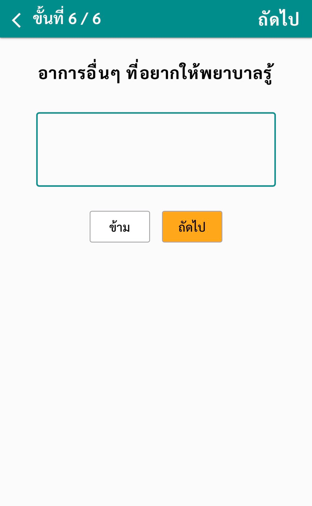
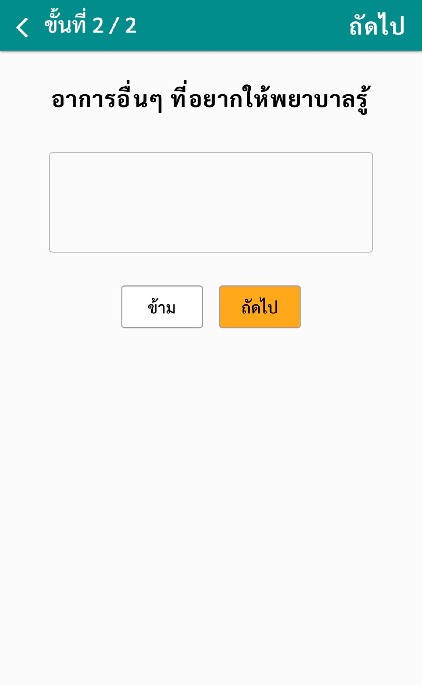

คู่มือการใช้งานสำหรับคนไข้
1. เข้าสู่ระบบ โดยเลือกได้ 2 วิธี
- กรอกรหัสผู้ป่วย
- สแกน QR code (สแกนจาก QR code scannerใดก็ได้)

2. เช็คตารางประจำวัน
คนไข้ต้องตรวจร่างกายด้วยตนเอง 6 รอบ/วัน ตามเวลาดังนี้
| รอบเช้า | 02:00 | 06:00 | 10:00 |
| รอบเย็น | 14:00 | 18:00 | 22:00 |
*หากลืมจะไม่สามารถย้อนกลับไปกรอกข้อมูลรอบที่ผ่านมาได้
- กรอกข้อมูล กดปุ่ม “เริ่มตรวจตัวเอง”
- ทำตามขั้นตอนตรวจร่างกายเบื้องต้น



3. ตรวจร่างกายเบื้องต้นด้วยตนเอง
(ขึ้นอยู่กับแต่ละโรงพยาบาลว่าต้องการข้อมูลชนิดใดบ้าง)
*โปรดระบุข้อมูลให้ถูกต้อง และครบถ้วน เนื่องจากข้อมูลมีผลต่อการวินิจฉัย
- กรอกอุณหภูมิร่างกาย
- กรอกค่าออกซิเจนในเลือด
- กรอกค่าความดันเลือด
- กรอกค่าอัตราการเต้นของหัวใจ
- ตอนนี้คุณมีอาการอะไรบ้าง
- กรอกอาการอื่นๆ ที่อยากให้ทีมแพทย์รู้





เลือกอาการที่คุณกำลังเป็น (เลือกได้มากกว่า 1อย่าง)

หากมีอาการอื่นๆ ที่ต้องการบอก ทีมแพทย์
สามารถพิมพ์ในช่องว่างได้ และกดปุ่ม “ถัดไป”

4. ตรวจสอบข้อมูล
ตรวจสอบข้อมูลทั้งหมดก่อนส่งให้แพทย์
กดเครื่องหมาย “<” ที่มุมซ้ายเพื่อย้อนกลับ ไปแก้ไข
กดปุ่ม “ส่งข้อมูล” เมื่อตรวจสอบเสร็จสิ้น

5. ส่งข้อมูลเสร็จเรียบร้อย
หากเห็นหน้านี้แสดงว่าข้อมูลของท่านได้ส่งถึงมือ ทีมแพทย์แล้วเรียบร้อย